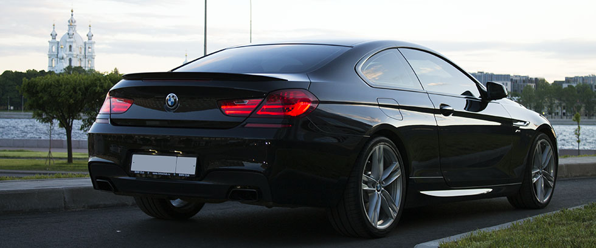
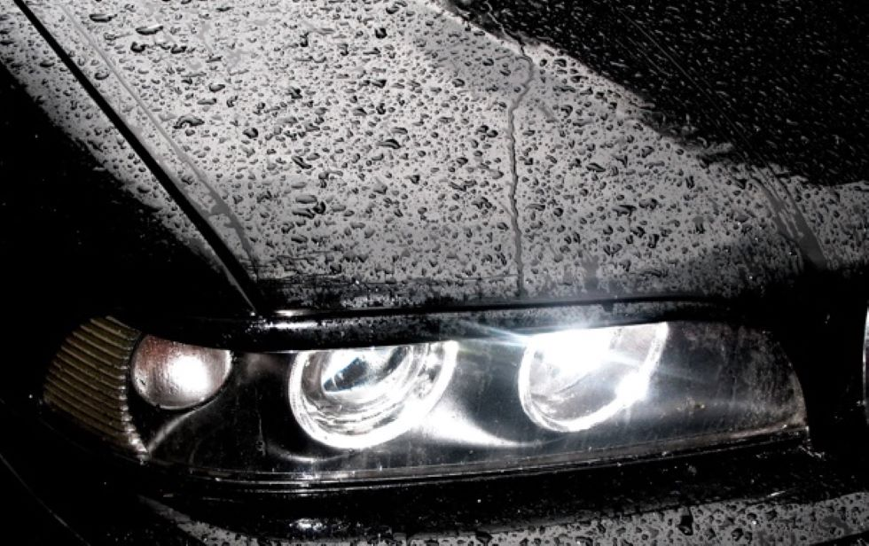
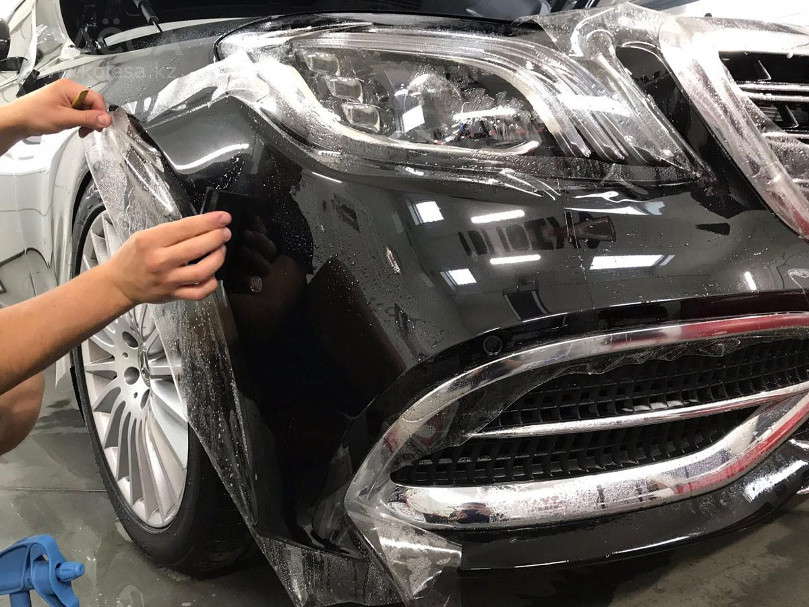

Защитные покрытия кузова
Современные технологии по защите кузова автомобиля появились сравнительно недавно. Их появление обусловлено не только технологическим прогрессом и увеличением количества автомобилей, но ужесточением среды эксплуатации автомобилей, что особенно актуально для климата и дорожных условиях
Защита кузова химическими покрытиями
В эту категорию входят все химические покрытия, наносимые на кузов автомобиля: керамические покрытия, кварцевые покрытия, жидкое стекло, твердые и жидкие воски, полимерные покрытия и многое другое. Покрытия этой категории отличаются степенью защиты и глубиной блеска, стоимостью, сложностью в нанесении и в проверенном сроке службы. Покрытия помогают сохранить лакокрасочный слой – спасают от выгорания, химического повреждения солями и реагентами, а как дополнительный приятный эффект кузов, обработанный химической защитой меньше пачкается и легче моется. Самые дорогие и продвинутые покрытия для химической защиты кузова позволяют уменьшить степень механических повреждений.
Защита кузова антигравийной пленкой
Антигравийная пленка – один из лучших вариантов защиты кузова от механических повреждений – сколов, царапин, мелких ДТП и мелочей, оставшихся на кузове после неудачной парковки. Современные пленки не желтеют, при снятии не повреждают лак и эксплуатируются в течении 4-5 лет без ухудшения своих свойств. Отработанная годами технология оклейки вкупе с заводскими лекалами для бамперов, фар, зеркал и прочих элементов позволяют добиваться превосходного результата. Именно качественная антигравийная пленка позволяет через 5 лет при ее демонтаже получить элемент в состоянии нового и, что очень важно, в заводской окраске.
Стоимость покрытия защитной пленкой:
| Элемент | Стоимость |
| Передний бампер | 15 000 |
| Зеркала | 5 000 |
| Полоса капот | 10 000 |
| Кромка над лобовым стекло | 7 500 |